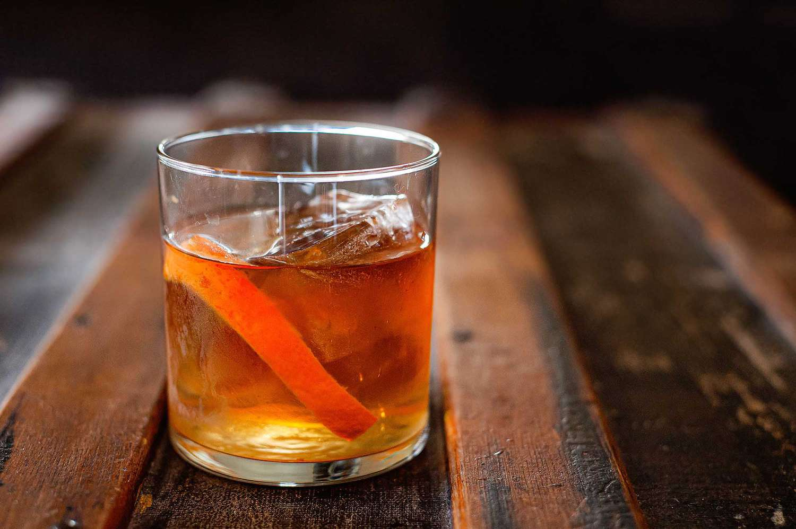

Old Fashioned
Ingredients
- 2 sweet potatoes (steamed)
- Flour
- Salt
- 4 leaves of sage
- 4 tbsp butter
- 3 cloves garlic (minced)
- Red pepper flakes, salt, pepper
- Fresh grated parmesan
Instructions
- Blend skinless sweet potatoes with flour and salt until a soft dough is formed.
- Roll out dough into a log on a floured surface and cut into gnocchi pieces. Score with a fork
- Boil gnocchi until they float.
- In a saucepan, brown some butter with sage leaves and garlic.
- Add in the gnocchi to coat in the sauce until they become crispy. Top with red pepper flakes, salt, and pepper to taste.
- Garnish with grated parmesan!